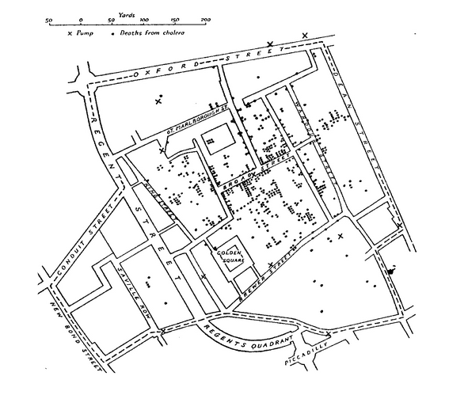

4 Adatvizualizáció
Példa adatvizualizáció fontosságára: John Snow és a londoni kolera járvány
John Snow ábrázolta London egyik utcájában a kolera megbetegedések megjelenésének a helyét
Előtte azt hitték, hogy a kolera levegő útján terjed
Az ábra alapján azonban kiderült, hogy a városi kutak mellett sűrűbbek a megbetegedések
Ebből John Snow arra következtetett, hogy a kútba kerülő szennyvíz útján terjed a kolera
Jó példa arra, hogy néha egyszerű adatvizualizáció útján is sokat tanulhatunk az adatokból, nem kell mindig bonyolult statisztikai eljárásokat használni
John Snow ábrája a Figure 4.1 látható
Szerepe:
Az adatok ellenőrzése
Hasonló középértékekkel és szórásokkal rendelkező nyers adatok nagyon más értékeket vehetnek fel
Segít megtalálni hibákat is az adatokban
Például: Az adatokban lévő variancia, ahogy láthattuk nagyon különböző lehet ugyanolyan középértékek esetében
Egy történet elmesélése
- az adatok közti összefüggés feltárása
DE a vizualizáció nem szabad megtévesztő legyen!
4.1 A jó adatvizualizáció ismérvei
Az ábra minden részének legyen információ értéke
Felesleges vagy redundáns elemek ne kerüljenek rá, mert elterelik a figyelmet a lényegről és megzavarják az értelmezést
Olyan elemek jelenjenek meg csak az ábrán, amelyek nem törölhetők információ veszteség nélkül
Lásd:
adat/tinta arány
- Felesleges részek, amik törölhetők információ veszteség nélkül, ne legyenek az ábrán
Ábra szemét
- Olyan grafikai elem, ami nem segíti az adatokban lévő információ megértését
Legjobb megmutatni az egyéni adatpontokat is amennyiben ez lehetséges
- Az összesítés torzíthatja az eredményeket
Használd ki az ábránál a teret, de figyelj rá, hogy közben ne torzítsd az adatokat
Különböző ábrázolási módok nagyon más történetet tudnak elmesélni
Példa: szerepeljen-e a nulla érték az y tengelyen vagy ne
Figyelj az emberi percepció limitációira
Színvakság
- Használj színvak barát színeket
Pie chart
Az embereknek ennél a vizualizációs módszernél nagyon nehéz az arányokat helyesen értelmezni!
Ne használjuk!
Főleg ne felesleges 3. dimenzióval…
4.2 Gyakori adatvizualizációs megoldások
4.2.1 Doboz ábra (boxplot)
A helyzetmutatókat általában egy boxplot segítségével vizualizáljuk
Ahol a doboz felső határsa a 75-ik percentilist, az alsó határa a 25-ik percentilist jelöli
- A két vonal közötti rész az IQR
A kettő közti vonal a doboz felénél az 50-ik percentilist jelöli
- Másnéven medián
A dobozból kijövő függőleges vonalak a 75-ik és a 25-ik percentileseken kívül eső, de még nem outlier értékeket mutatják
- Ezen kívül pöttyökkel tudjuk jelölni azokat az egyes adatpontokat, amelyek outlier értéknek számítanak
A boxplot néha elfedi a változó eloszlásának formáját
Például nem jelzi, ha az eloszlásunk két csúcsú (bimodális)
Ezzel szemben a ferdeség látszik rajta, az egyik kvartilis vizuálisan közelebb van a mediánhoz, mint a másik
Egy alternatív vizualizációs megoldás a violin plot (hegedű ábra)
4.3 Hogyan szúrjunk ki megtévesztő vizualalizációs elemeket?
Segít-e az ábra megérteni az adatokat, vagy inkább csak összezavar?
Figyelmesen nézd meg az ábrán a tengelyek nevét és léptékét!
Nézd meg, hogy a tengelyek a nulláról indulnak-e!
Nézd meg, hogy a különböző csoportokat bemutató ábrázolások egyenlő arányban változnak-e egymással
- A részek összege nem több mint 100%?
Nem hagytak-e ki adatpontot az ábráról?
- Nincsenek kontextusból kiragadott adatok?
Nincsenek olyan vizuális megoldások amik az emberi percepció gyengeségeire építve próbálják az adatokban lévő arányokat torzítani?
- Például: négyzetes terület nagyságát nehezebben tudjuk megbecsülni, mint egy oszlopét
Összevontak-e kategóriákat indokolatlanul?
Szerepelnek-e olyan adatcsoportok az ábrán, amelyek önkényesen lettek kiválasztva?
Példák rossz ábrákra